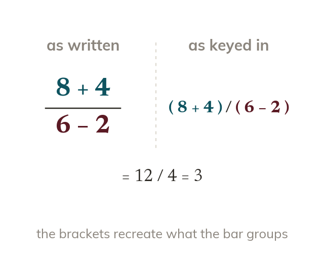
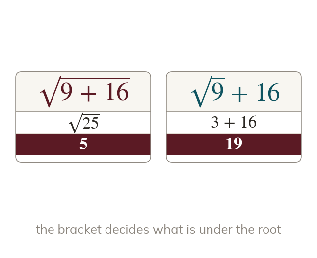
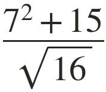
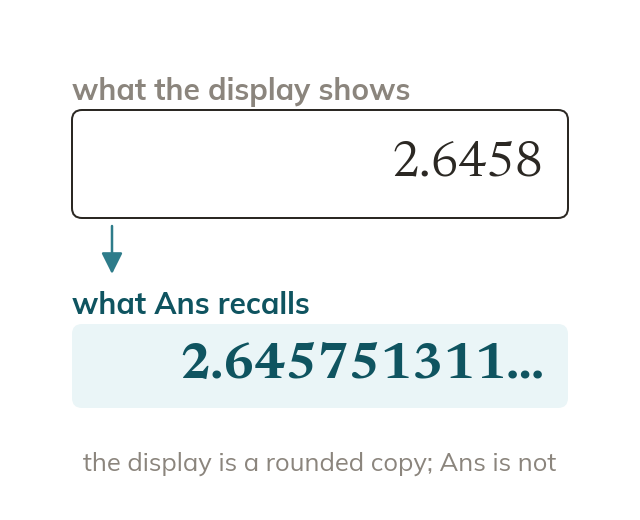
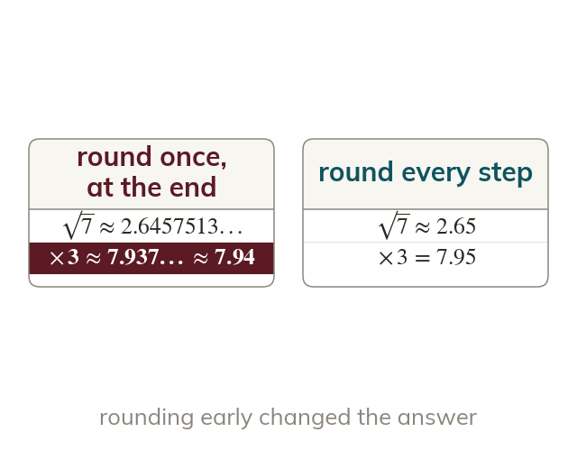

Topic 8.1 · Prime Factors and Calculation Skills · Lesson 4 of 5
Calculator Skills
A calculator only gives the right answer if you tell it exactly what you mean - and the way a calculation looks on paper doesn't always match the order you'd key it in. Today you'll learn where brackets are essential, and why the way you carry values between steps matters just as much as the buttons you press.
By the end you’ll know…
The calculator has dedicated keys for fractions, powers, roots and brackets, and entering a calculation as written preserves the order of operations.
Brackets are needed wherever the written layout groups terms that the keystroke order would not, such as everything above a fraction bar.
The Ans key reuses the previous full result rather than a rounded copy of it.
Memory keys store an exact value, so rounding only once at the end stops errors compounding.
By the end you can
G3Evaluate multi-step calculations on a calculator using brackets, powers and roots correctly.
G5Store and recall values in memory to avoid rounding errors in multi-step problems.
Work down the page at your own pace. Write every answer in your book first, then click to check it.
01
Do Now
About 5 minutes
1
Work out and the cube root of
;
2
Work out
3
Work out showing the correct order of operations.
4
Work out
Remember these?
LAST LESSONGiven work out
is so the answer is
LAST WEEKUse prime factors to find the HCF of and
Shared primes at the lower power:
LAST TERMA fair dice is rolled. Write the probability of an even number as a fraction in its simplest form.
LAST YEARTwo angles sit on a straight line. One is What is the other?
02
Learn
Read each card, then follow the worked examples one step at a time.

Order of operations on a calculator
Brackets force the grouping that the layout shows. Add them around everything above or below a fraction bar.
Typing a calculation exactly as it's written only works if the on-screen layout already matches the order you'd key it in. Anywhere the written layout groups terms that the keystrokes wouldn't automatically group - most commonly everything above or below a fraction bar - brackets must be added by hand to force that grouping.

Powers and roots
Power and root keys act only on what is next to them. Bracket anything that is not a single number.
The power and root keys apply only to what's directly next to them, so anything that needs to be included under a root, or as part of a power's base, must also be bracketed if it isn't a single number.
CALCULATOR BRACKETS
Evaluate on a calculator.

The fraction bar groups everything above it and everything below it - the calculator won't do that automatically from keystrokes typed in a line, so both the numerator and the denominator need brackets.
Key in( 7 ^ 2 + 15 ) / sqrt( 16 )
Write the calculation
Square
Square root
YOUR TURN · a
Evaluate on a calculator.
bracket the numerator and the denominator:
YOUR TURN · b
Evaluate on a calculator. (Hint: what needs bracketing here - the numerator, the denominator, or both?)
only the denominator: Typed without the bracket, the calculator works out
03
Check your understanding
Pick an answer. If it's wrong, the feedback tells you which mistake it was.
To evaluate on a calculator, which keystrokes are correct?
Not quite. Without brackets it works out first, then adds giving
Yes. The brackets make it add first, then divide:
Not quite. Bracket the bottom of the fraction, not
Not quite. The bottom is an add. Keep the + inside brackets.
To evaluate on a calculator, which keystrokes are correct?
Not quite. Bracket the top too:
Not quite. Bracket the bottom too:
Yes. Brackets round the top and the bottom keep each group together:
Not quite. Without brackets it works out first. Bracket the top and the bottom.
Why does a fraction typed into a calculator sometimes need brackets that aren't on paper?
Not quite. Calculators can do fractions. On one line, brackets show the grouping.
Yes. The fraction bar groups the top and bottom. On one line, brackets do that job.
Not quite. Brackets don't make it more accurate. They show what to work out first.
Not quite. The calculator only knows the grouping if you type the brackets.
04
Practise
mark as you go
Checkpoint. Evaluate on a calculator, showing the keystrokes you'd use including any brackets. Show your working - I'll check it before you move on.Show your teacher before you go on
1
Work out on a calculator.
Bracket the top:
2
Work out on a calculator.
3
Work out on a calculator.
The root covers the whole bracket:
4
Work out on a calculator.
Bracket the top and the bottom:
5
To work out Mia types and gets What is her mistake?
Without brackets the calculator divides first
EXT
Work out on a calculator.
05
Learn
Read each card, then follow the worked examples one step at a time.

The Ans key
Ans recalls the exact value of the last result. It is not the rounded copy on the display.
The Ans key recalls the exact value of the previous calculation's full result, not a rounded copy of what's shown on the display - even if the display only shows a few decimal places, the calculator keeps working with the exact stored value.

Memory and rounding
Memory keys store exact values too. Round only once, at the very end. Early rounding lets small errors build up.
Memory keys store an exact value the same way. Rounding only once, at the very end of a multi-step calculation, keeps the final answer accurate - rounding at every intermediate step lets small errors build up and can change the final rounded answer.
CHAINING WITH ANS
Find to d.p., rounding only at the end, not before.
Key in and leave it in the display, or store it - don't round it or write down a rounded copy, then add using Ans
(not a rounded version)
Square the result, then divide by all using the exact chained value. Calculated this way: d.p.).
If had been rounded to first, then the same steps give - a different, wrong answer, because the rounding error compounded through the squaring step.
YOUR TURN · c
Find to decimal places, keeping the root exact with Ans.
so d.p.); rounding the root to first gives the wrong
YOUR TURN · d
Find to decimal places, keeping exact.
is needed twice, and Ans is overwritten once the top is worked out, so store in memory and recall it: d.p.).
06
Check your understanding
Pick an answer. If it's wrong, the feedback tells you which mistake it was.
A calculator shows rounded to on the display. If the next step uses the Ans key, what value does it actually use?
Not quite. Ans keeps the full value, not the rounded display.
Not quite. Ans uses the exact value, not a rounded one.
Yes. Ans recalls the full value, even though the screen shows fewer digits.
Not quite. Ans stores the exact value for you. No re-typing needed.
A multi-step calculation has three steps before a final answer to decimal places. What's the correct approach to rounding?
Not quite. Rounding at each step lets errors build up. Round only at the end.
Yes. Keep the exact value all the way, then round once at the end.
Not quite. Any rounding in the middle adds an error. Round only at the end.
Not quite. Don't round in the middle at all. Round only the final answer.
A student calculates partway through a problem. What's the best way to use this value in the next step?
Not quite. Re-typing brings back a rounding error. Store the exact value.
Yes. Memory keeps the exact value, so no rounding error creeps in.
Not quite. Rounding to adds a big error. Store the exact value.
Not quite. Storing it once is quicker and keeps the exact value.
07
Practise
mark as you go
Checkpoint. Find giving your answer to decimal places. Use the memory or Ans key to avoid rounding until the final step, and be ready to show me you didn't round early - I'll check it before you move on.Show your teacher before you go on
1
Work out to d.p. Keep exact.
(in Ans)Ans² d.p.)
2
Work out to d.p.
(in Ans)Ans² ÷ d.p.)
3
Work out to d.p.
(in memory) d.p.)
4
Work out to d.p.
- d.p.)
5
For question Leo rounds to first. What answer does he get, and why is it wrong?
Rounding early changes the answer: is correct
EXT
Store in memory. Work out to d.p.
exactly; d.p.)
08
Exit ticket
On paper, on your own, then check
1
Explain why needs brackets around when typed into a calculator, but does not need any brackets.
Without brackets a calculator applies BIDMAS and would divide by first, then add - brackets force the addition to happen first; has no such grouping to protect, so none are needed.
2
Evaluate on a calculator, showing the brackets you'd use.
Key in
3
Find giving your answer to decimal places. Explain how you avoided rounding until the final step.
d.p.), keeping exact (using Ans/the calculator's stored value) through the addition and squaring, and rounding only the final answer.
Finished? Next lesson: 8.1.5 Calculating with Time.
Practise more
After the lesson, or whenever you want more
Dr Frost
Log in, then search for a code to practise that skill.
160aUse a calculator to determine the value of calculations using basic arithmetic operations, potentially including brackets.
160bUse a calculator to determine the value of calculations involving a square or square root.
160dUse a calculator to determine the value of a calculation involving fractions.